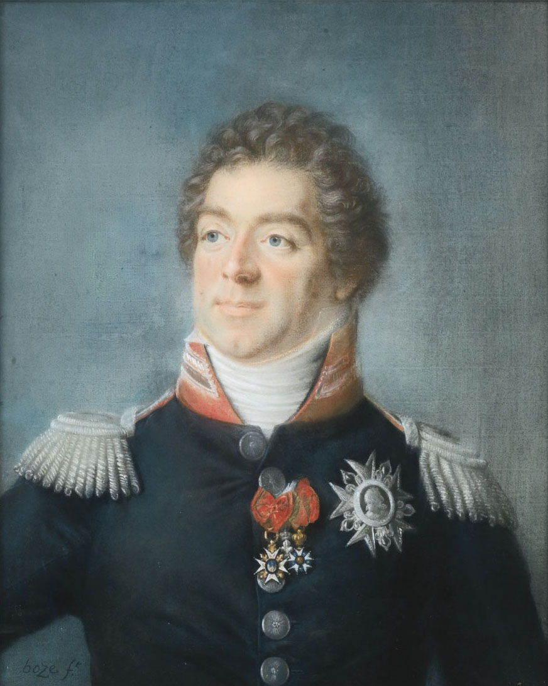
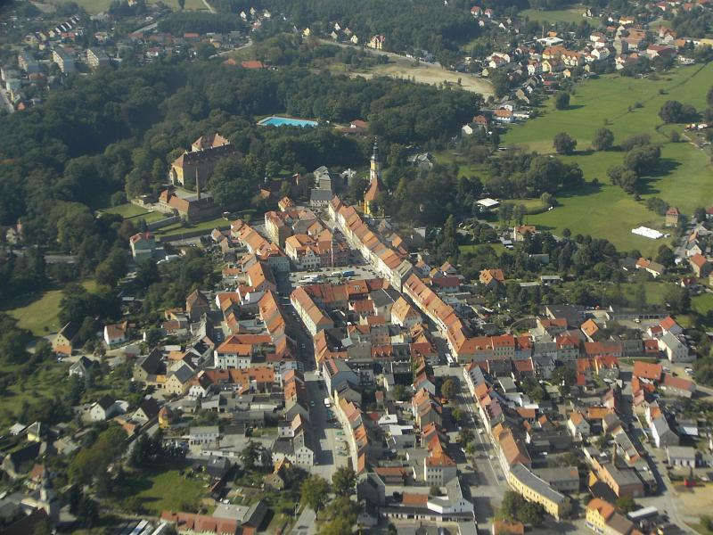
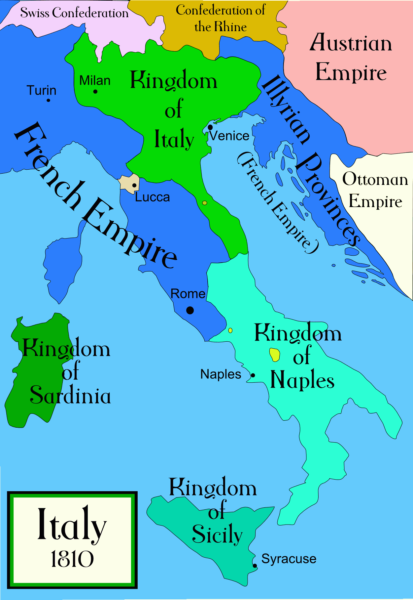
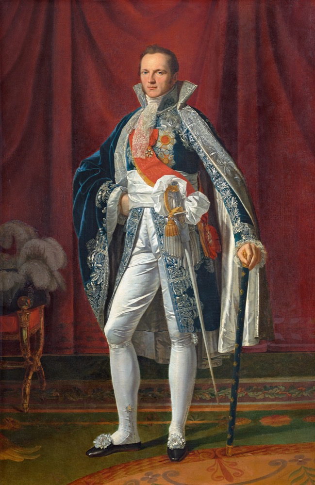
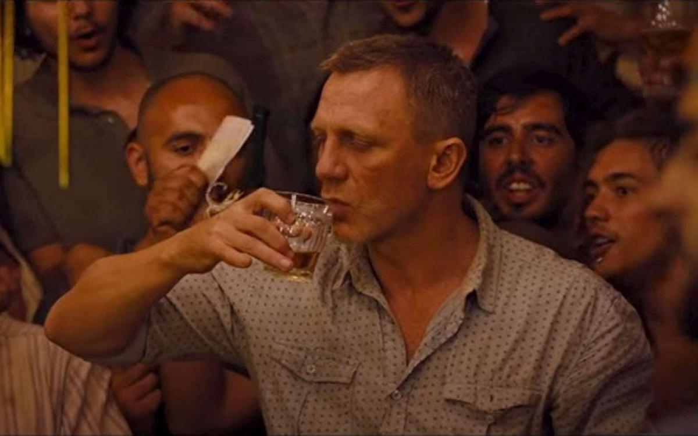

바우첸을 향하여 (10) - 정보와 평화
게시: 2023-02-13T06:30:53+09:00
연합군이 바우첸 동쪽에서 땅을 파며 방어선을 준비하는 동안 프랑스군의 각 군단은 속속 엘베 강을 넘어 진격했지만, 정작 총사령관인 나폴레옹은 강을 건너지 않고 드레스덴에 머물고 있었습니다. 드레스덴에서 보급 물자 확보를 하고, 이제 의미가 없어진 2개 군 즉 엘베 방면군과 마인 방면군을 통합한 뒤 엘베 방면군 사령관이던 외젠을 자신의 이탈리아 왕국으로 돌려보내는 등 처리해야 할 각종 행정 업무가 많았기 때문이기도 했지만, 가장 큰 이유는 2가지, 정보와 평화였습니다. 첫째, 나폴레옹은 엘베 강 동쪽으로 철수한 연합군의 행방에 대한 정확한 정보를 기다리고 있었습니다. 기병대의 부족으로 인한 정찰의 어려움은 여전하여, 연합군이 어디로 향했는지에 대한 정보가 부족했습니다. 나폴레옹이 기대한 대로 연합군이 찢어져 프로이센군은 베를린으로 향하고 러시아군은 브레슬라우로 향했는지도 불분명했는데, 거기에 대해서는 현지 주민들이 제공하는 서로 상충하는 정보들만 들어왔기 때문에 믿을 수가 없었습니다. 결국 프랑스군의 누군가가 직접 눈으로 확인해야 했는데, 그러자면 빠른 진격이 필요했습니다. 그 선봉을 맡은 것은 막도날의 제11 군단이었습니다. 위에서 언급된 것처럼 엘베 방면군이 해체되면서 원래 그 소속이던 막도날의 제11 군단은 이제 외젠이 아니라 나폴레옹에게 직접 보고하게 되었습니다. 실제로는 참모장인 베르티에가 나폴레옹과 막도날 사이에 있었기 때문에 막도날은 하루가 멀다 하고 날아드는 베르티에의 보고서 재촉에 시달려야 했습니다. 막도날은 지시 받은대로 연합군에 대한 정보를 얻기 위해 좀 지나치다 싶을 정도로 진격을 서둘렀고, 5월 12일 마침내 비숖스베르다(Bischofswerda) 인근에서 연합군의 후위인 밀로라도비치의 부대와 충돌하기도 했습니다. 이때 막도날의 병력은 너무 서둘러 전진하느라 지나치게 분산되어 있었으므로 연합군이 마음만 먹었다면 쉽게 각개격파할 수 있을 정도였지만, 다행히 연합군도 싸움을 서두르지는 않았습니다. 그렇게 최선을 다했음에도 막도날은 베르티에로부터 엄한 질책을 받아야 했습니다. 연합군에 대한 상세한 정보 보고서를 자주 보내지 않았기 때문이었습니다. 베르티에는 막도날에게 '프랑스의 원수라면 알아서 스파이를 파견하고 주민들을 취조하고 적의 전령들을 나포하여 적에 대한 정보를 취득해야 하고, 그에 대한 상세한 보고서를 하루에도 몇 번씩 보내야 한다, 대체 내가 이런 것까지 일일이 지시해야 하는가?' 라며 성질을 부렸습니다. 실제로 나폴레옹은 베르티에에게 하루에 20번씩 새로 들어온 정보가 없는지 들들 볶았다고 합니다.

(베르티에는 나폴레옹보다 16살이나 연상이었고 막도날보다도 12살 연상이었습니다. 게다가 나폴레옹과는 제1차 이탈리아 원정 때부터 그의 참모 역할을 했으므로 정말 가까운 사이였습니다. 무엇보다 그는 치밀하고 유능한 참모의 표상으로서, 그의 능력에 대해서는 아무도 토를 달지 않았습니다. 그럼에도 불구하고 나폴레옹이 장 란이나 콜랭쿠르처럼 그를 가까운 친구로는 여기지 않았던 것 같은데, 그 이유는 아무래도 나이 차이도 있는데다 베르티에의 성격은 시샘이 많아 장 란처럼 시원시원하지도 않고 콜랭쿠르처럼 우아하거나 강직하지도 않았기 때문이 아니었나 싶습니다. 실제로 베르티에는 나폴레옹의 제1차 퇴위 이후 재빨리 부르봉 왕정 편에 붙었고, 나폴레옹이 엘바 섬을 탈출하자 몹시 불안해 했다고 합니다. 1815년 6월 1일 벌어진 그의 의문의 추락사는 미스테리 중의 하나입니다. 나폴레옹은 워털루 전투에서 베르티에의 부재를 무척이나 아쉬워 했습니다.)
나폴레옹이 가장 알고 싶어했던 정보는 과연 프로이센군과 러시아군이 갈라섰는가 하는 것이었습니다. 그걸 알아야 토르가우와 비텐베르크를 통해 북동쪽으로 갈라보낸 네 원수의 제3, 제5, 제7 군단들을 어디로 움직일지를 결정할 수 있기 때문이었습니다. 네에게는 그 3개 군단 뿐만 아니라 빅토르의 지휘 하에 달려오고 있던 제2 군단까지 가세할 예정이었으므로, 사실상 프랑스 야전군 전체를 나폴레옹이 15만, 네가 8만 정도로 나누어 지휘하는 셈이었습니다. 그리고 그만큼 네가 베를린으로 진격할지 다시 남하하여 나폴레옹과 합세할지가 전쟁 전체의 승패를 가늠할 주요 요인이었습니다. 나폴레옹이 마침내 그 정보를 얻은 것은 5월 14일 새벽이었습니다. 5월 10일과 11일에 걸쳐 프로이센 국왕과 함께 블뤼허, 요크, 클라이스트 등의 주요 지휘관이 모두 쾨니히스브뤽(Königsbrück)을 거쳐 바우첸 방향으로 향했다는 확실한 정보가 보고된 것입니다. 이건 나폴레옹으로서는 매우 실망스러운 정보였고, 그래서인지 이렇게 기다리던 정보가 들어왔음에도 네의 군단들을 어느 방향으로 움직이게 할지 당장 결정을 내리지 못했습니다. 그렇게 나폴레옹이 망설이는 사이 일단 네의 군단들은 나폴레옹의 기존 명령대로 베를린을 향한 행군을 계속 했습니다.

(쾨니히스브뤽은 지금도 인구 5천을 넘지 않는 작은 도시입니다.)
다음 날인 5월 15일 저녁, 막도날은 자신의 눈으로 직접 새로운 정보를 입수합니다. 막도날은 이 날 베르트랑의 제4 군단과 마르몽의 제6 군단과 합세하여 밀로라도비치의 후위부대를 스프레(Spree) 강 너머 바우첸 방면으로 밀어냈는데, 그 강변에서는 바우첸 일대에 진을 친 연합군 전체의 모습이 시야에 똑똑히 보였던 것입니다. 연합군이 바우첸에서 더 물러나지 않고 방어선을 치고 있다는 소식은 나폴레옹에게 즉각 전달되었습니다. 둘째, 나폴레옹도 평화 협정에 대한 생각을 하고 있었습니다. 다만 이는 나폴레옹이 마침내 중2병에서 벗어나 정말 평화를 바랐기 때문은 아니었습니다. 앞서 언급한 대로, 오스트리아의 외무상 메테르니히는 부브나 장군을 사절로 파견하여 나폴레옹에게 평화 조약 체결을 종용하고 있었습니다. 메테르니히의 평화 제안은 대략 오늘날 크로아티아-알바니아 지역인 일리리아(Illyria) 지방을 오스트리아에게 돌려주고, 라인 연방을 해체하며, 바르샤바 공국을 예전처럼 오스트리아-프로이센-러시아가 분할해 가지는 조건이었습니다. 그와 함께, 메테르니히는 오스트리아가 무장 중재자로서 나설 것이며, 오스트리아의 평화 제안을 거부하는 측에 무력으로 제재를 가할 것이라고 협박하기도 했습니다.

(일리리아는 원래 오스트리아의 영토이던 것을 나폴레옹이 1809년 바그람 전투 이후 맺은 쇤브룬 조약에서 완전히 빼앗아 프랑스의 영토로 편입한 곳입니다. 베네치아에 이어 일리리아를 상실함으로써 오스트리아는 바다로의 출구가 막힌 내륙 국가가 되었고, 이는 오스트리아에게 큰 타격이 되었습니다. 그래서 메테르니히는 일리리아의 반환을 강력히 요구한 것입니다.)
나폴레옹은 초대받지도 않은 오스트리아가 이런 식으로 싸움에 끼어들어 그 영향력을 키우고 콩고물을 챙기는 것을 절대 원치 않았습니다. 엘베 방면군 사령관을 맡고 있던 외젠을 해임한 뒤 이탈리아 왕국으로 돌려보낸 것도 이와 상관이 있었습니다. 나폴레옹은 외젠이 이탈리아 왕국으로 돌아가 거기서 다시 신병들을 규합하여 새로운 군단을 편성한 뒤, 오스트리아의 남쪽 국경을 위협하도록 했던 것입니다. 이는 오스트리아에게 경거망동하지 말라는 신호였습니다. 또한 나폴레옹은 평화 조약을 맺는다고 하더라도 알렉산드르와 직접 교섭하기를 원했습니다. 그가 인정하는 유럽의 패권국은 예전부터 프랑스와 러시아 뿐이기 때문이었습니다. 멍청한 프로이센 국왕 프리드리히 빌헬름 따위는 애초에 대화 상대로도 간주하지 않았습니다. 다만 나폴레옹은 다음 전투에서 연합군을 확실하게 박살을 내놓은 뒤에 자신에게 유리한 조건으로 평화 협정을 맺기를 원했습니다. 그래서 일단 나폴레옹은 오스트리아의 평화 협정 요구를 철저히 무시하고 있었습니다.

(아르망 콜랭쿠르입니다. 나폴레옹보다 4살 어렸던 그는 나폴레옹이 가장 신뢰하는 측근 중 하나였습니다. 그는 나폴레옹의 다른 부하들과는 달리 진짜 귀족 집안 출신으로서 우아한 교양을 쌓은 신사였고, 러시아어를 비롯한 여러 외국어에 능통한 실력자이기도 했습니다. 그는 당시 귀족들이 흔히 그러하듯이 14세에 군에 입대하여 15세 때 소위를 달았습니다. 이렇게 보면 그는 그냥 평범한 귀족 소년으로 보이지만, 혁명 초기에 그의 비범한 강직함을 보여주는 일화가 있습니다. 혁명이 일어나자 당시 대위 계급이었던 그는 혁명군 편이었음에도 귀족이라는 이유로 의심을 받자 계급을 버리고 일반 사병으로서 파리 국민 방위군에 합류하려 했습니다. 그러나 그 와중에 결국 귀족이라는 이유만으로 투옥되자, 그는 탈옥한 뒤 다시 국민 방위군을 찾아가 입대를 했다고 합니다. 백일천하 이후 부르봉 왕정이 두번째로 복귀했을 때 나폴레옹의 심복이었던 그는 살생부에 이름이 올랐지만 그를 아꼈던 짜르 알렉산드르의 개입으로 그가 목숨을 건졌다는 사실은 유명합니다. 그는 결국 53세의 젊은 나이로 병사했는데, 병명은 나폴레옹과 동일한 위암이었습니다.)

(아르망 콜랭쿠르는 프랑스 북부 해안지방인 피카르디(Picardie) 출신입니다. 피카르디는 지금도 유명한 피카디(Picardy) 유리잔이 1927년 최초로 만들어진 곳으로도 유명한데, 이 피카디 유리잔은 제임스 본드가 애용하는 잔으로서 007 영화에도 자주 나옵니다.) 나폴레옹이 이렇게 평화 협정에 대해 고민하고 있을 때 막도날로부터 바우첸에서 연합군이 방어진지를 구축하고 있다는 소식이 날아들었습니다. 이제는 움직여야 할 때였습니다. 나폴레옹은 5월 18일 오후, 마침내 드레스덴을 떠나 엘베 강을 건넜습니다. 그렇게 드레스덴을 떠나 말을 몰 때, 나폴레옹은 그의 심복이자 마복시(grand écuyer)인 콜랭쿠르(Armand de Caulaincourt)를 불러 나란히 말을 몰며 장시간 이야기를 나누었습니다. 그리고 이야기를 마치자, 콜랭쿠르는 나폴레옹을 떠나 바우첸을 향해 말을 달렸습니다. 과연 콜랭쿠르가 향한 곳은 어디였을까요? Source : The Life of Napoleon Bonaparte, by William Milligan Sloane Napoleon and the Struggle for Germany, by Leggiere, Michael V
https://www.britannica.com/event/Napoleonic-Wars/The-campaign-of-France-1814 https://en.wikipedia.org/wiki/Armand-Augustin-Louis_de_Caulaincourt
https://en.wikipedia.org/wiki/Illyrian_Provinces